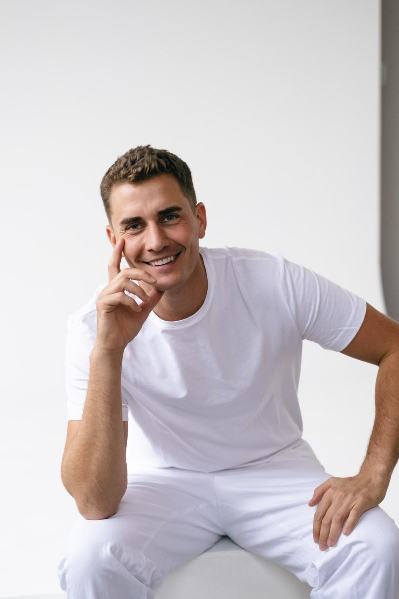

Náš tým

MDDr. Jonáš Celerýn
Věnuje se komplexní stomatologické péči s využitím mikroskopu. Specializuje se na rekonstrukce chrupu, estetickou stomatologii, protetiku, implantologii a chirurgii měkkých tkání. Tři roky působil jako pedagog na 1. lékařské fakultě Univerzity Karlovy a absolvoval odborné curriculum ČADE. Ke každému pacientovi přistupuje individuálně, s důrazem na detail a dlouhodobý výsledek.
Ukázky naší práce

Kontaktujte nás
Adresa: Vinohradská 196, Praha 3, 130 00
Telefon: 272 735 268
Email: dmd@zubnidmd.cz